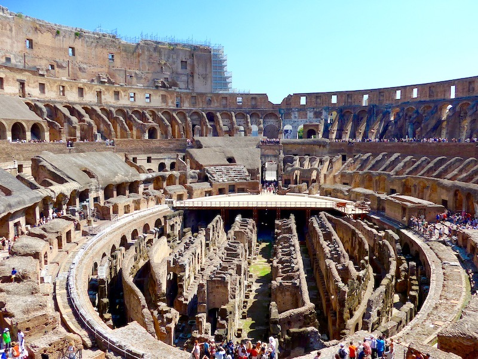

Coliseu
O Coliseu, ou Anfiteatro Flaviano, é o maior anfiteatro já construído na história da humanidade. Localizado no coração de Roma, Itália, foi construído no século I d.C. e chegou a comportar entre 50.000 e 80.000 espectadores. Era o local onde se realizavam as famosas lutas de gladiadores, caçadas de animais selvagens (venationes) e encenações de batalhas navais.
Informações Gerais
| Característica | Detalhes |
|---|---|
| Localização | Roma, Itália |
| Início da construção | 72 d.C. (Imperador Vespasiano) |
| Inauguração | 80 d.C. (Imperador Tito) |
| Capacidade | 50.000 a 80.000 espectadores |
| Dimensões | 188 m × 156 m; altura de 48,5 m |
| Patrimônio Mundial UNESCO | Desde 1980 |
| Status | Maravilha do Mundo Moderno (desde 2007) |
Curiosidades
- O Coliseu foi construído usando trabalho de prisioneiros judeus capturados após a destruição de Jerusalém.
- O nome original é Anfiteatro Flaviano — "Coliseu" vem provavelmente de uma enorme estátua próxima (o Colosso de Nero).
- Possuía um sistema de toldos retráteis (Velarium) para proteger os espectadores do sol.
- Embaixo da arena havia um sistema de túneis e câmaras (hipogeu) para gladiadores e animais.
- Após a queda do Império Romano, foi usado como habitação, fortaleza e pedraria por séculos.
- Cerca de two terços da estrutura original foram destruídos ao longo dos séculos por terremotos e saqueadores.
Imagen
